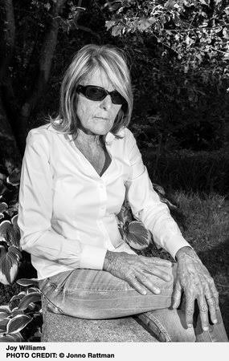

About the Author

Dark Humor. Strange Characters. American Absurdity.
Joy Williams is an American novelist and short story writer born in Massachusetts in 1944. She is best known for her short fiction, which often focuses on dysfunctional relationships, loneliness, death, and the strange behavior of ordinary people. Her writing is usually direct and dryly funny, with characters who can be difficult, selfish, or completely unpredictable.
Her first novel, State of Grace, was published in 1973 and nominated for the National Book Award. She later published several collections of short stories, including Taking Care, Honored Guest, and The Visiting Privilege. Her 2000 novel The Quick and the Dead was a Pulitzer Prize finalist. She also writes essays about environmental issues, particularly in Ill Nature, which criticizes human attitudes toward animals and the natural world.
Williams' fiction often shifts between realism and the absurd without much explanation. Her characters are rarely easy to sympathize with, and her stories tend to avoid neat endings or obvious lessons. She has received the Rea Award for the Short Story and the 2021 Library of Congress Prize for American Fiction. Her more recent books include Harrow (2021) and Concerning the Future of Souls (2024).
Explore Her Work
The Visiting Privilege collects many of Williams' short stories and is a good introduction to her fiction. Her novel Harrow takes a more explicitly environmental approach, following a teenager in a damaged and increasingly strange world.